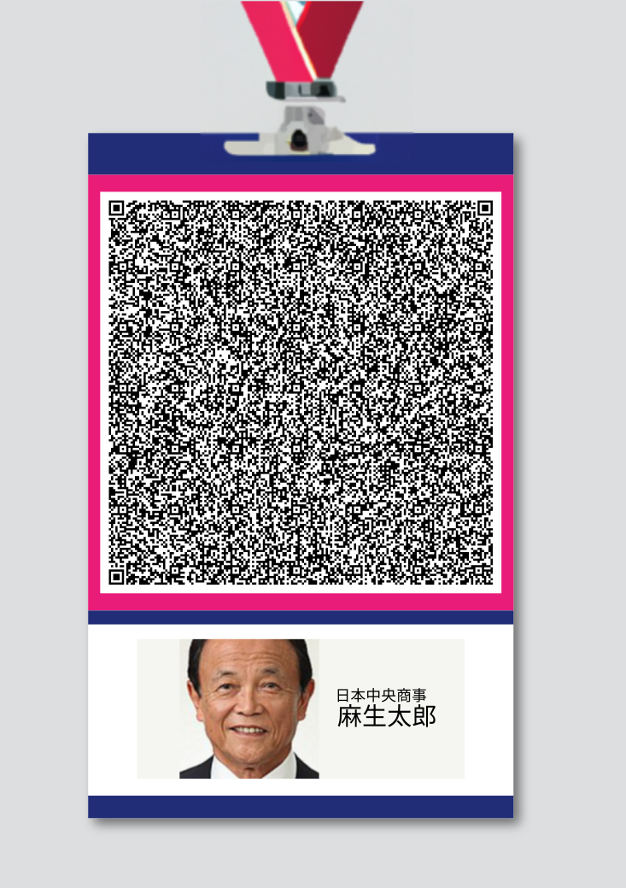

face01lib package
Subpackages
Submodules
face01lib.Calc module
License for the Code.
Copyright Owner: Yoshitsugu Kesamaru Please refer to the separate license file for the license of the code.
- class face01lib.Calc.Cal(log_level: str = 'info')
Bases:
objectCal class include various calculation methods.
- HANDLING_FRAME_TIME: float
- HANDLING_FRAME_TIME_FRONT: float
- HANDLING_FRAME_TIME_REAR: float
- Measure_func(func)
Used as a decorator to time a function.
- static Measure_processing_time(HANDLING_FRAME_TIME_FRONT, HANDLING_FRAME_TIME_REAR) float
Measurement of processing time (calculation) and output to log.
- Parameters
HANDLING_FRAME_TIME_FRONT (float) – First half point
HANDLING_FRAME_TIME_REAR (float) – Second half point
- static Measure_processing_time_backward() float
Measurement of processing time (second half).
- Returns
Second half point
- Return type
float
- static Measure_processing_time_forward() float
Measurement of processing time (first half).
- Returns
First half point
- Return type
float
- cal_resized_logo_image(resized_logo_image: ndarray[Any, dtype[float64]], set_height: int, set_width: int) Tuple[int, int, int, int, ndarray[Any, dtype[float64]], ndarray[Any, dtype[float64]]]
Calculate logo image data.
- Parameters
resized_logo_image (npt.NDArray[np.float64]) – Resized logo image data
set_height (int) – Height
set_width (int) – Width
- Returns
Return tuple
- Return type
Tuple[int,int,int,int,npt.NDArray[np.float64],npt.NDArray[np.float64]]
Example
>>> cal_resized_logo_nums = Cal().cal_resized_logo_image( resized_logo_image, set_height, set_width )
- cal_resized_telop_image(resized_telop_image: ndarray[Any, dtype[float64]]) Tuple[int, int, int, int, ndarray[Any, dtype[float64]], ndarray[Any, dtype[float64]]]
Calculate telop image data.
- Parameters
resized_telop_image (npt.NDArray[np.float64]) – Resized telop image data
- Returns
Tuple
- Return type
Tuple[int,int,int,int,npt.NDArray[np.float64],npt.NDArray[np.float64]]
Example
>>> cal_resized_telop_nums = Cal().cal_resized_telop_image(resized_telop_image)
- cal_specify_date(logger) None
Run evaluation version only.
- decide_text_position(error_messg_rectangle_bottom, error_messg_rectangle_left, error_messg_rectangle_right, error_messg_rectangle_fontsize, error_messg_rectangle_messg)
Not use.
- make_draw_rgb_object(pil_img_obj_rgb)
Generate object.
- Parameters
pil_img_obj_rgb (object) – object
- Returns
object
- Return type
object
- make_error_messg_rectangle_font(fontpath: str, error_messg_rectangle_fontsize: str, encoding='utf-8')
Not use.
- pil_img_instance(frame: ndarray[Any, dtype[uint8]])
Generate pil_img object.
- Parameters
frame (npt.NDArray[np.uint8]) – Image data
- Returns
PIL object
- Return type
object
- return_percentage(distance: float, deep_learning_model: int) float
Receive ‘distance’ and return percentage.
- Parameters
distance (float) – distance
deep_learning_model (int) – deep_learning_model
- Returns
percentage
- Return type
float
Note
- deep_learning_model:
0:dlib_face_recognition_resnet_model_v1.dat, 1:efficientnetv2_arcface.onnx, 2:mobilefacenet.onnx
Example
>>> percentage = Cal().return_percentage(distance, deep_learning_model)
- to_percentage(tolerance: float, deep_learning_model: int) float
Receive ‘tolerance’ and return ‘percentage’.
- Parameters
tolerance (float) – tolerance
- Returns
percentage
- Return type
float
- to_tolerance(similar_percentage: float, deep_learning_model: int) float
Receive similar_percentage and return tolerance.
- Parameters
similar_percentage (float) – ‘Probability of similarity’ described in config.ini
deep_learning_model (int) – Deep learning model.
- Returns
tolerance
- Return type
float
Note
- deep_learning_model:
0:dlib_face_recognition_resnet_model_v1.dat, 1:efficientnetv2_arcface.onnx, 2:mobilefacenet.onnx
Example
>>> tolerance: float = Cal().to_tolerance( self.CONFIG["similar_percentage"], self.CONFIG["deep_learning_model"] )
- x1: int
- x2: int
- y1: int
- y2: int
face01lib.Core module
License for the Code.
Copyright Owner: Yoshitsugu Kesamaru Please refer to the separate license file for the license of the code.
- class face01lib.Core.Core(log_level: str = 'info')
Bases:
objectCore class.
This class include many useful methods.
- common_process(CONFIG: Dict) Generator
Generator of frame_datas_array.
common_process function consists 3 part of Core() methods.
Core().frame_pre_processing
Core().face_encoding_process
Core().frame_post_processing
- Yields
Generator –
- frame_datas_array
frame_datas_array: List[Dict]
Example
Make generator object
>>> obj = Core().common_process(CONFIG)
Call ‘__next__()’ method
>>> while True: frame_datas_array = obj.__next__()
- face_encoding_process(logger, CONFIG: Dict, frame_datas_array: List[Dict]) Tuple[List[ndarray[Any, dtype[float64]]], List[Dict]]
Encode face data and Return bellow.
list of encoded data
frame_datas_array
- Parameters
logger (_type_) – logger
CONFIG (Dict) – Dict including initial setting
frame_datas_array (List[Dict]) – frame datas
- Returns
- list of encoded data
Tuple[List[npt.NDArray[np.float64]]
- frame_datas_array
List[Dict]]
- Definition of person_data_list and frame_datas_array:
>>> person_data = { 'name': name, 'pict':filename, 'date':date, 'location':(top,right,bottom,left), 'percentage_and_symbol': percentage_and_symbol } >>> person_data_list.append(person_data)
>>> frame_datas = { 'img': resized_frame, 'face_location_list': face_location_list, 'overlay': overlay, 'person_data_list': person_data_list } >>> frame_datas_array.append(frame_datas)
- frame_post_processing(logger, CONFIG: Dict, face_encodings: List[ndarray[Any, dtype[float64]]], frame_datas_array: List[Dict]) List[Dict]
Modify each frame’s datas.
- Parameters
logger (_type_) – logger
CONFIG (Dict) – Dict of initial settings
face_encodings (List[npt.NDArray[np.float64]]) – List of encoded face datas
frame_datas_array (List[Dict]) – List of datas
- Returns
List of modified datas
- Return type
List[Dict]
- Modify:
- Composite images
Default face image
Rectangle
Percentage
Name
Percentage calculation
Save cropped face images
Make person_data_list
Make frame_datas_list
- frame_pre_processing(logger, CONFIG: Dict, resized_frame: ndarray[Any, dtype[uint8]]) List[Dict]
Return frame_datas_array.
- Parameters
logger (_type_) – logger
CONFIG (Dict) – Dict of Initial settings
resized_frame (npt.NDArray[np.uint8]) – Resized frame
- Returns
frame_datas_array
- Return type
List[Dict]
- Processing:
- If CONFIG[“headless”] == False
copy frame data for overlay
composite telop and logo
Compute face coordinates
- Make frame_datas
img
face_location_list
- overlay
- If CONFIG[“headless”] == True, insert dummy data
np.empty((2,2,3), dtype=np.uint8)
person_data_list
- Make frame_datas_array
frame_datas_array.append(frame_datas)
- Data structure of frame_datas_array:
overlay (npt.NDArray[np.uint8])
face_location_list (List[Tuple[int,int,int,int]])
name (str)
filename (str)
percentage_and_symbol (str)
person_data_list (List)
frame_datas_array (List[Dict])
resized_frame (npt.NDArray[np.uint8])
See Core.make_frame_datas_array()
Example
>>> exec_times = 2 # Initialize CONFIG: Dict = Initialize('FACE-COORDINATE', 'info').initialize() # Make generator frame_generator_obj = VidCap().frame_generator(CONFIG) # Make logger import os.path dir: str = os.path.dirname(__file__) log = Logger().logger(__file__, dir) # Make generator core = Core() # Repeat 'exec_times' times for i in range(0, exec_times): # Call __next__() from the generator object resized_frame = frame_generator_obj.__next__() frame_datas_array = core.frame_pre_processing(log, CONFIG,resized_frame)
- make_frame_datas_array(overlay: ndarray[Any, dtype[uint8]], face_location_list: List[Tuple[int, int, int, int]], name: str, filename: str, percentage_and_symbol: str, person_data_list: List, frame_datas_array: List[Dict], resized_frame: ndarray[Any, dtype[uint8]]) List[Dict]
Method to make frame_datas_array.
Return the data structure of frame_datas_list.
- Parameters
overlay (npt.NDArray[np.uint8]) – Copy of frame
face_location_list (List[Tuple[int,int,int,int]]) – List of face_location
name (str) – Each of person’s name
filename (str) – File name
percentage_and_symbol (str) – Concatenate of digit of percentage and ‘%’ symbol
person_data_list (List) – List of person_data
frame_datas_array (List[Dict]) – Array of frame_datas
resized_frame (npt.NDArray[np.uint8]) – Numpy array of frame
- Returns
List of frame_datas_array
- Return type
List[Dict]
Example
person_data
>>> { 'name': name, 'pict': filename, 'date': date, 'location': (top,right,bottom,left), 'percentage_and_symbol': percentage_and_symbol }
person_data_list
>>> person_data_list.append(person_data)
frame_datas
>>> { 'img': resized_frame, 'face_location_list': face_location_list, 'overlay': overlay, 'person_data_list': person_data_list }
frame_datas_list
>>> frame_datas_array.append(frame_datas)
- mp_face_detection_func(resized_frame: ndarray[Any, dtype[uint8]], model_selection: int = 0, min_detection_confidence: float = 0.4)
Processes an RGB image and returns a list of the detected face location data.
- Parameters
resized_frame (npt.NDArray[np.uint8]) – Resized image frame
model_selection (int, optional) – Value set in ‘config.ini’. Defaults to 0.
min_detection_confidence (float, optional) – Value set in ‘config.ini’. Defaults to 0.4.
- Returns
A NamedTuple object with a “detections” field that contains a list of the detected face location data.’
Note
number_of_people and same_time_recognize in config.ini are disabled when using mp_face_detection_func.
- override_args_dict(CONFIG: Dict, override_list: List[Tuple]) Dict
Override CONFIG for example.
- Parameters
Dict – CONFIG
List[Tuple] – override_list
- Returns
CONFIG
- Return type
Dict
Example
>>> CONFIG = Core.override_args_dict( CONFIG, [ ('crop_face_image', False), ('output_debug_log', True) ] )
Note
- THIS METHOD IS EXPERIMENTAL
Unexpected side effects may occur.
- If you specified key is not exist, application will fail down
with print out log ‘warning’.
You cannot change key ‘headless’. If override it, application will fall down.
- r_face_image(frame: ndarray[Any, dtype[uint8]], face_location: Tuple[int, int, int, int]) ndarray[Any, dtype[uint8]]
Return face image which expressed for ndarray.
- Parameters
frame (npt.NDArray[np.uint8]) – Frame image
face_location (Tuple[int,int,int,int]) – Face location (coordinate)
- Returns
Face image which expressed for ndarray
- Return type
npt.NDArray[np.uint8]
- return_anti_spoof(frame: ndarray[Any, dtype[uint8]], face_location: Tuple[int, int, int, int]) Tuple[str, float, bool]
Return result of anti spoof.
Note
This function is EXPERIMENTAL! It might occur side effects.
- Parameters
frame (npt.NDArray[np.uint8]) – Each of frame
face_location (Tuple[int,int,int,int]) – Face location
- Returns
spoof_or_real
score
- ELE
Equally Likely Events
- Return type
Tuple[str, float, bool]
- return_concatenate_location_and_frame(resized_frame: ndarray[Any, dtype[uint8]], face_location_list: List[Tuple[int, int, int, int]]) Tuple[List[Tuple[int, int, int, int]], ndarray[Any, dtype[uint8]]]
Return tuple.
concatenate_face_location_list
concatenate_person_frame
- Parameters
resized_frame (npt.NDArray[np.uint8]) – Resized frame
face_location_list (List[Tuple[int,int,int,int]]) – Face location list
- Returns
- concatenate_face_location_list (Tuple[List[Tuple[int,int,int,int]])
List of concatenated coordinates
- concatenate_person_frame (npt.NDArray[np.uint8]])
Image data of concatenated person image data
face01lib.Initialize module
License for the Code.
Copyright Owner: Yoshitsugu Kesamaru Please refer to the separate license file for the license of the code.
- class face01lib.Initialize.Initialize(section: str = 'DEFAULT', log_level: str = 'info')
Bases:
objectInitialize class.
Load config.ini, return Dict style.
- initialize() Dict
Initialize values.
- Returns
CONFIG Dictionary of initialized preferences
- Return type
Dict
Example
CONFIG: Dict = Initialize("SECTION").initialize()
face01lib.LoadImage module
License for the Code.
Copyright Owner: Yoshitsugu Kesamaru Please refer to the separate license file for the license of the code.
- class face01lib.LoadImage.LoadImage(headless: bool, conf_dict: Dict)
Bases:
objectThis class include method to load images.
- LI(set_height: int, set_width: int) Tuple[Mat, ...]
Return values.
- Summary:
Load images, and return all together in a tuple.
- Parameters
self – self
set_height (int) – Height described in config.ini
set_width (int) – Width described in config.ini
- Returns
Tuple.
rect01_png (cv2.Mat): Loaded image data as ndarray
rect01_NG_png (cv2.Mat): Loaded image data as ndarray
rect01_REAL_png (cv2.Mat): Loaded image data as ndarray
rect01_SPOOF_png (cv2.Mat): Loaded image data as ndarray
rect01_CANNOT_DISTINCTION_png (cv2.Mat): Loaded image data as ndarray
resized_telop_image (Union[cv2.Mat, None]): Loaded image data as ndarray
cal_resized_telop_nums : Return Tuple or None
resized_logo_image (Union[cv2.Mat, None]): Loaded image data as ndarray or None
cal_resized_logo_nums (Union[Tuple[int,int,int,int,npt.NDArray[np.float64],npt.NDArray[np.float64]], None]):
load_unregistered_face_image (bool): Bool
telop_image (Union[cv2.Mat, None]): Loaded image data as ndarray or None
logo_image (Union[cv2.Mat, None]): Loaded image data as ndarray or None
unregistered_face_image (Union[cv2.Mat, None]): Loaded image data as ndarray or None
face01lib.api module
License for the Code.
Copyright Owner: Yoshitsugu Kesamaru Please refer to the separate license file for the license of the code.
- class face01lib.api.Dlib_api(log_level: str = 'info')
Bases:
objectDlib api.
Author: Original code written by Adam Geitgey, modified by YOSHITSUGU KESAMARU
Email: y.kesamaru@tokai-kaoninsho.com
- compare_faces(deep_learning_model: int, known_face_encodings: List[ndarray[Any, dtype[float64]]], face_encoding_to_check: ndarray[Any, dtype[float64]], tolerance: float = 0.6, threshold: float = 0.4) Tuple[ndarray, float]
Compare a list of face encodings against a candidate encoding to see if they match.
- Parameters
deep_learning_model (int) – 0: dlib cnn model, 1: efficientnetv2_arcface.onnx
known_face_encodings (List[npt.NDArray[np.float64]]) – A list of known face encodings
face_encoding_to_check (npt.NDArray[np.float64]) – A single face encoding to compare against the list
tolerance (float) – How much distance between faces to consider it a match. Lower is more strict. 0.6 is typical best performance.
- Returns
A tuple of True/False values indicating which known_face_encodings match the face encoding to check, and the min distance between them.
- cosine_similarity(embedding1, embedding2, threshold=0.4)
cosine_similarity 特徴量ベクトルを受け取り、類似度を計算し、閾値を超えているかどうかを返す
- Parameters
embedding1 (npt.NDArray) – feature vector
embedding2 (npt.NDArray) – feature vector
threshold (float, optional) – threshold. Defaults to 0.4.
- Returns
Returns a tuple of a numpy array of booleans and the minimum cos_sim
- Return type
Tuple[np.array, float]
- efficientnetv2_arcface_model_compute_face_descriptor(resized_frame: ndarray[Any, dtype[uint8]], raw_face_landmark, size: int = 224, _PADDING: float = 0.1) ndarray[Any, dtype[float32]]
EfficientNetV2とArcFaceモデルを使用して顔の特徴量を計算します。
この関数は、与えられた顔の画像データから、EfficientNetV2とArcFaceモデルを使用して顔の特徴量（embedding）を計算します。
- Parameters
resized_frame (npt.NDArray[np.uint8]) – リサイズされたフレームの画像データ。
raw_face_landmark (dlib.rectangle) – 顔のランドマーク情報。
size (int, optional) – 顔のチップのサイズ。デフォルトは224。
_PADDING (float, optional) – 顔のチップを取得する際のパディング。デフォルトは0.1。
- Returns
顔の特徴量（embedding）。
- Return type
npt.NDArray[np.float32]
- face_distance(face_encodings: List[ndarray[Any, dtype[float64]]], face_to_compare: ndarray[Any, dtype[float64]]) ndarray[Any, dtype[float64]]
Given a list of face encodings, compare them to a known face encoding and get a euclidean distance for each comparison face.
The distance tells you how similar the faces are.
- Parameters
face_encodings (List[npt.NDArray[np.float64]]) – List of face encodings to compare (=small_frame)
face_to_compare (npt.NDArray[np.float64]) – A face encoding to compare against (=face_location_list)
- Returns
A numpy ndarray with the distance for each face in the same order as the ‘faces’ array
- Return type
npt.NDArray[np.float64]
- face_encodings(deep_learning_model: int, resized_frame: ndarray[Any, dtype[uint8]], face_location_list: List = [], num_jitters: int = 0, model: str = 'small') List[ndarray]
Given an image, return the 128-dimension face encoding for each face in the image.
- Parameters
resized_frame (npt.NDArray[np.uint8]) – The image that contains one or more faces (=small_frame)
face_location_list (List) – Optional - the bounding boxes of each face if you already know them. (=face_location_list)
num_jitters (int) – How many times to re-sample the face when calculating encoding. Higher is more accurate, but slower (i.e. 100 is 100x slower)
model (str) – Do not modify.
- Returns
A list of 128-dimensional face encodings (one for each face in the image). If deep_learning_model == 1, the size of the list is 512-dimensional face encodings, and the type is List[npt.NDArray[np.float32]]. See Issue # 19.
Image size, it should be of size 150x150. Also cropping must be done as ‘dlib.get_face_chip’ would do it. That is, centered and scaled essentially the same way.
- Return type
List[npt.NDArray[np.float64]]
See also
- class dlib.face_recognition_model_v1: compute_face_descriptor(*args, **kwargs)
http://dlib.net/python/index.html#dlib_pybind11.face_recognition_model_v1
- compute_face_descriptor(*args, **kwargs)
http://dlib.net/python/index.html#dlib_pybind11.face_recognition_model_v1.compute_face_descriptor
- face_locations(resized_frame: ndarray[Any, dtype[uint8]], number_of_times_to_upsample: int = 0, mode: str = 'hog') List[Tuple[int, int, int, int]]
Returns an array of bounding boxes of human faces in a image.
This method used only ‘use_pipe = False’.
- Parameters
resized_frame (npt.NDArray[np.uint8]) – Resized image
number_of_times_to_upsample (int) – How many times to upsample the image looking for faces. Higher numbers find smaller faces.
mode (str) – Which face detection mode to use. “hog” is less accurate but faster on CPUs. “cnn” is a more accurate deep-learning mode which is GPU/CUDA accelerated (if available). The default is “hog”.
- Returns
A list of tuples of found face locations in css (top, right, bottom, left) order
- load_image_file(file: str, mode: str = 'RGB') ndarray[Any, dtype[uint8]]
Loads an image file (.jpg, .png, etc) into a numpy array.
- Parameters
file (str) – image file name or file object to load
mode (str) – format to convert the image to. Only ‘RGB’ (8-bit RGB, 3 channels) and ‘L’ (black and white) are supported.
- Returns
image contents as numpy array
- Return type
npt.NDArray[np.uint8]
- percentage(cos_sim)
percentage 与えられた cos_sim から類似度を計算する
- Parameters
cos_sim (float) – cosine similarity
- Returns
percentage of similarity
- Return type
float
face01lib.combine module
License for the Code.
Copyright Owner: Yoshitsugu Kesamaru Please refer to the separate license file for the license of the code.
face01lib.compile module
face01lib.draft module
face01lib.load_preset_image module
License for the Code.
Copyright Owner: Yoshitsugu Kesamaru Please refer to the separate license file for the license of the code.
face01lib.load_preset_image_bk module
License for the Code.
Copyright Owner: Yoshitsugu Kesamaru Please refer to the separate license file for the license of the code.
- class face01lib.load_preset_image_bk.LoadPresetImage(log_level: str = 'info')
Bases:
object- load_preset_image(deep_learning_model: int, RootDir: str, preset_face_imagesDir: str, upsampling: int = 0, jitters: int = 100, mode: str = 'hog', model: str = 'small') Tuple[List, List]
Load face image from preset_face_images folder.
- Parameters
deep_learning_model (int) – You can select from 0 or 1. 0 is Dlib, 1 is Efficientnetv2_arcface.onnx.
RootDir (str) – Root directory. npKnown.npzが作成されるディレクトリ。
preset_face_imagesDir (str) – Path to preset_face_images folder. pngファイルが存在するディレクトリ。
upsampling (int, optional) – Value of upsampling. Defaults to 0.
jitters (int, optional) – Value of jitters. Defaults to 100.
mode (str, optional) – You can select from hog or cnn. Defaults to ‘hog’.
model (str, optional) – You cannot modify this value.
- Returns
known_face_encodings_list, known_face_names_list
- known_face_encodings_list
List of encoded many face images as ndarray
- known_face_names_list
List of name which encoded as ndarray
- Return type
Tuple[List, List]
Example
>>> known_face_encodings, known_face_names = LoadPresetImage().load_preset_image( self, self.conf_dict["RootDir"], self.conf_dict["preset_face_imagesDir"] )
face01lib.logger module
License for the Code.
Copyright Owner: Yoshitsugu Kesamaru Please refer to the separate license file for the license of the code.
- class face01lib.logger.Logger(log_level: str = 'info')
Bases:
objectSet log level.
- logger(name: str, dir: str)
Manage log.
- Parameters
name (str) – File name
dir (str) – Directory name. (Usually the root directory of FACE01)
- Returns
logger
- Return type
Logger object
Note
parent_dir in the above example refers to the root directory of FACE01.i.e. CONFIG[‘RootDir’] in the code below.# Initialize CONFIG: Dict = Initialize('LIGHTWEIGHT_GUI', 'info').initialize() # Set up logger logger = Logger(CONFIG['log_level']).logger(__file__, CONFIG['RootDir'])
face01lib.return_face_image module
License for the Code.
Copyright Owner: Yoshitsugu Kesamaru Please refer to the separate license file for the license of the code.
- class face01lib.return_face_image.Return_face_image
Bases:
objectThis class include a method for return face image function.
- return_face_image(resized_frame: ndarray[Any, dtype[uint8]], face_location: Tuple[int, int, int, int]) ndarray[Any, dtype[uint8]]
Return face image array which contain ndarray.
- Parameters
resized_frame (numpy.ndarray) – frame data
face_location (tuple) – face location which ordered top, right, bottom, left
- Returns
face image of ndarray or empty array
- Return type
list ( npt.NDArray[np.uint8])
face01lib.spoof module
Spoof Module.
Note
This module is experimental.
このモジュールは、顔の特徴点の検出、オブジェクトの検出、およびQRコードの生成に関連する機能を提供します。
- 主なクラス:
Spoof: 顔の特徴点の検出、オブジェクトの検出、およびQRコードの生成を行うメソッドを持つクラス。
- 主なメソッド:
iris: 顔の虹彩を検出し、その特徴点を描画します。
obj_detect: オブジェクトを検出し、その特徴点を描画します。
make_qr_code: QRコードを生成します。
- 使用例:
spoof_obj = Spoof() spoof_obj.iris() spoof_obj.obj_detect() spoof_obj.make_qr_code()
- 注意:
このモジュールは、実験的なものです。
- License:
Copyright Owner: Yoshitsugu Kesamaru Please refer to the separate license file for the license of the code.
- class face01lib.spoof.Spoof(log_level: str = 'info')
Bases:
object- detect_eye_blinks(frame_datas_array, CONFIG) bool
Return True if eye blink is detected.
- Parameters
frame_datas_array (array[Dict]) – frame_datas_array
- Returns
If eye blink is detected, return True. Otherwise, return False.
- Return type
bool
- iris()
- make_qr_code()
- obj_detect()
face01lib.utils module
License for the Code.
Copyright Owner: Yoshitsugu Kesamaru Please refer to the separate license file for the license of the code.
- class face01lib.utils.Utils(log_level: str = 'info')
Bases:
objectUtils class.
contains convenience methods
- align_and_resize_maintain_aspect_ratio(path: str, upper_limit_length: int = 1024, padding: float = 0.4, size: int = 224, contain: str = '') List[str]
Align and resize input image with maintain aspect ratio.
- Parameters
path (str) – file path which contain file name. (‘.jpg’ or ‘.jpeg’ or ‘.png’. These must be lower case.) If path is directory, All files contained in this directory are targeted.
upper_limit_length (int, optional) – Upper limit length of width. Defaults to 1024.
padding (float, optional) – Padding around the face. Large = 0.8, Medium = 0.4, Small = 0.25, tiny = 0.1. Default = 0.4
size (int, optional) – Resized size of image data. Default is 224.
contain (str, optional) – Contain word in the directory
- Returns
List of files that failed to align and resize.
- Return type
error_files (list)
- Result:

Note
If the width of the input image file exceeds ‘1024px’, it will be resized to ‘1024px’ while maintaining the aspect ratio.
- create_concat_images(img: str, size: int = 224) None
Create tile images.
- Parameters
img (str) – absolute file path
size (int) – image size. Default is 224.
- distort_barrel(dir_path: str, align_and_resize_bool: bool = False, size: int = 224, padding: float = 0.1, initial_value: float = -0.1, closing_value: float = 0.1, step_value: float = 0.1) List[str]
Distort barrel.
Takes a path which contained png, jpg, jpeg files in the directory, distort barrel and saves them.
- Parameters
dir_path (str) – absolute path of target directory.
align_and_resize_bool (bool, optional) – Whether to align and resize. Defaults to False.
size (int, optional) – Width and height. Defaults to 224.
padding (float, optional) – Padding. Defaults to 0.1.
initial_value (float) – Initial value. Default is -0.1.
closing_value (float) – Closing value. Default is 0.1.
step_value (float) – Step value. Default is 0.1.
- Returns
Path list of processed files.
Note
ImageMagick must be installed on your system. - See ImageMagick https://imagemagick.org/script/download.php
- Result:

- get_face_encoding(deep_learning_model: int, image_path: str, num_jitters: int = 0, number_of_times_to_upsample: int = 0, mode: str = 'cnn', model: str = 'small')
get_face_encoding : get face encoding from image file.
- Parameters
deep_learning_model (int) – dli model: 0, efficientnetv2_arcface model: 1
image_path (str) – image file path.
num_jitters (int, optional) – Number of jitters. Defaults to 0.
number_of_times_to_upsample (int, optional) – Number of times to upsample the image looking for faces. Defaults to 0.
mode (str, optional) – cnn or hog. Defaults to ‘cnn’.
model (str, optional) – small or large. Defaults to ‘small’.
- Returns
face encoding data or None if not detected face.
- Return type
NDArray data (npt.NDArray[np.float32])
- get_files_from_path(path: str, contain: str = 'resize') list
Receive path, return files.
- Parameters
path (str) – Directory path
contain (str) – Contain word. If you want to get all files, set *. Default is resize.
- Returns
Files in received path (absolute path)
- Return type
list
- get_jitter_image(dir_path: str, num_jitters: int = 10, size: int = 224, disturb_color: bool = True)
Jitter images at the specified path.
- Parameters
dir_path (str) – path of target directory.
num_jitters (int, optional) – Number of jitters. Defaults to 10.
size (int, optional) – Resize image to size(px). Defaults to 224px.
disturb_color (bool, optional) – Disturb color. Defaults to True.
Note: This method is based on davisking/dlib/python_example/face_jitter.py. https://github.com/davisking/dlib/blob/master/python_examples/face_jitter.py
- resize_image(img: ndarray, upper_limit_length: int = 1024) ndarray
resize_image : resize image.
The input np.ndarray format image data is resized to fit the specified width or height. In this process, the aspect ratio is maintained by resizing based on the longer side of the width and height. The default maximum values for width and height are 1024px.
- Parameters
img (np.ndarray) – image data.
upper_limit_length (int, optional) – upper limit length. Defaults to 1024.
- Returns
resized image data.
- Return type
np.ndarray
- return_qr_code(face_encodings) List[ndarray]
return_qr_code : return qr code.
- Summary:
This method returns a QR code based on the face encoding list.
- Parameters
face_encodings (List) – face encoding list.
- Returns
qr code.
- Return type
List
See also
example/make_ID_card.py
- Results:
- 
- temp_sleep(temp: float = 80.0, sleep_time: int = 60)
temp_sleep : sleep time for cpu temperature.
If the CPU temperature exceeds the value specified by the argument temp, it sleeps for the time specified by sleep_time. If the sensors command fails to get the CPU temperature, it will try to execute it 3 times at 1 second intervals. If it still can’t get it, exit the program.
- Parameters
temp (float, optional) – cpu temperature. Defaults to 80.0.
sleep_time (int, optional) – sleep time. Defaults to 60.
- Returns
None
Note
The sensors and notify-send commands are required to use this method. The sensors command is included in the lm-sensors package. The notify-send command is included in the libnotify-bin package.

{kind=link}
{kind=link}
face01lib.video_capture module
License for the Code.
Copyright Owner: Yoshitsugu Kesamaru Please refer to the separate license file for the license of the code.
- class face01lib.video_capture.VidCap(log_level: str = 'info')
Bases:
objectVidCap class.
contains methods that initially process the input video data
- finalize(vcap) None
Release vcap and Destroy window.
- Parameters
vcap (cv2.VideoCapture) – vcap which is handle of input video process
- frame_generator(CONFIG: Dict) Generator
Generator: Return resized frame data.
- Parameters
CONFIG (Dict) – CONFIG
- Raises
StopIteration – ret == False, then raise StopIteration
- Yields
Generator – Resized frame data (npt.NDArray[np.uint8])
- frame_imshow_for_debug(frame: ndarray[Any, dtype[uint8]]) None
Used for debugging.
Display the given frame data in a GUI window for 3 seconds.
- Parameters
frame (npt.NDArray[np.uint8]) – Image data called ‘frame’
- Returns
None
- resize_frame(set_width: int, set_height: int, frame: ndarray[Any, dtype[uint8]]) ndarray[Any, dtype[uint8]]
Return resized frame data.
- Parameters
set_width (int) – Width described in config.ini
set_height (int) – Height described in config.ini
frame (npt.NDArray[np.uint8]) – Image data
- Returns
small_frame
- Return type
npt.NDArray[np.uint8]
- return_movie_property(set_width: int, vcap) Tuple[int, ...]
Return input movie file’s property.
- Parameters
set_width (int) – Width which set in config.ini
vcap (cv2.VideoCapture) – Handle of input movie processing
- Returns
self.set_width, fps, height, width, set_height
- Return type
Tuple[int,…]
- return_vcap(movie: str) VideoCapture
Return vcap object.
- Parameters
movie (str) – movie
- Returns
cv2.VideoCapture
- Return type
object
Module contents
License for the Code.
Copyright Owner: Yoshitsugu Kesamaru Please refer to the separate license file for the license of the code.